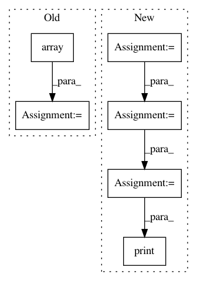

f968d7bec6552b6986731a4dfbb0a524d01a29a2,examples/plot_kmean_poincare_disk.py,,main,#,22
Before Change
Centroids = K_means.fit(X=Merged_Clusters, max_iter=5)
Data_Labels = gs.array([])
for data in Merged_Clusters:
Data_Labels = gs.append(Data_Labels, K_means.predict(data))
print("Centroids", Centroids)
visualization.plot(
After Change
manifold = HyperbolicSpace(dimension=2, point_type="poincare")
metric = HyperbolicMetric(dimension=2, point_type="poincare")
manifold_e = HyperbolicSpace(dimension=2)
metric_e = HyperbolicMetric(dimension=2)
x_b = gs.rand(10,2) * 1/2
x_e = manifold_e.intrinsic_to_extrinsic_coords(gs.rand(10,2))
e = metric_e.dist(x_e, x_e)
b = metric.dist(x_b, x_b+0.1 )
print("b shape", b.shape)
print("e shape", e.shape)
visualization.plot(
Merged_Clusters,
ax=ax,
space="H2_poincare_disk",
In pattern: SUPERPATTERN
Frequency: 4
Non-data size: 6
Instances
Project Name: geomstats/geomstats
Commit Name: f968d7bec6552b6986731a4dfbb0a524d01a29a2
Time: 2020-01-16
Author: thomas.l.p.gerald@gmail.com
File Name: examples/plot_kmean_poincare_disk.py
Class Name:
Method Name: main
Project Name: philipperemy/keras-tcn
Commit Name: 0cfe82c6beb9a28a5ff7da81b86fa0e93c388f14
Time: 2019-11-20
Author: premy@cogent.co.jp
File Name: tasks/save_reload_model.py
Class Name:
Method Name:
Project Name: ContextLab/hypertools
Commit Name: edaf3f4c2303b8c0364266d092335733b66ffbd0
Time: 2016-12-19
Author: andrew.heusser@gmail.com
File Name: python/examples/hypertools_demo-PPCA.py
Class Name:
Method Name:
Project Name: ContextLab/hypertools
Commit Name: 878be5344a7cca66858ba82981713099bde5f12f
Time: 2016-12-19
Author: andrew.heusser@gmail.com
File Name: python/examples/hypertools_demo-PPCA.py
Class Name:
Method Name: